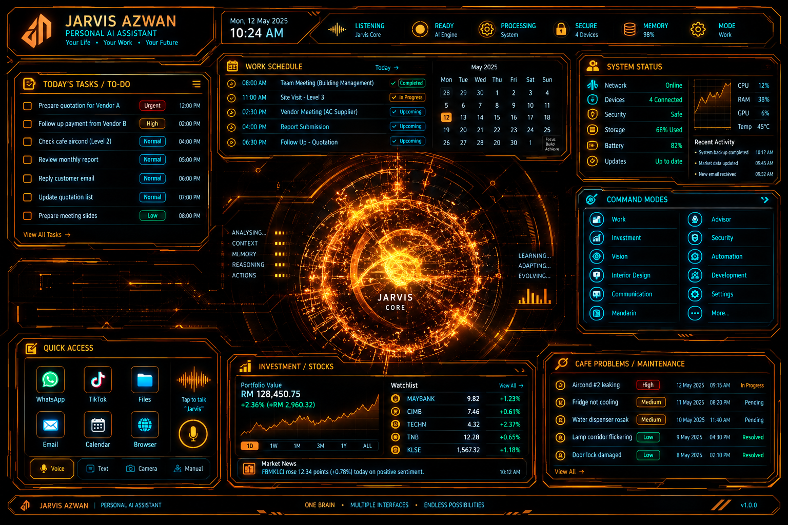

JARVIS
AZWAN
CORE ONLINE
GOOD EVENING, AZWAN
Personal AI command centre • iPhone Gateway • Free-first / provider-neutral
MODE: WORK • VOICE READY

JARVIS
CORE
COMMAND MODES
SYSTEM STATUS
iPHONE GATEWAY
READY
LOCAL MEMORY
ACTIVE
AI ROUTER
LOCAL
VOICE
MALE • EN-GB
WORK / TASKS
No tasks stored.
QUICK ACCESS
DEVICE LAYER
APPLE WATCH 9
Quick control target
RAY-BAN META 2
Vision / voice target
JARVIS RESPONSE
Ready, Azwan. Say a command.
SECURITY / APPROVAL
Consequential external actions require explicit owner approval.
Financial BUY/SELL/DEPOSIT/WITHDRAW/TRANSFER remain approval-gated.
No keys or seed phrases stored.
VOICE / BRAIN SETTINGS